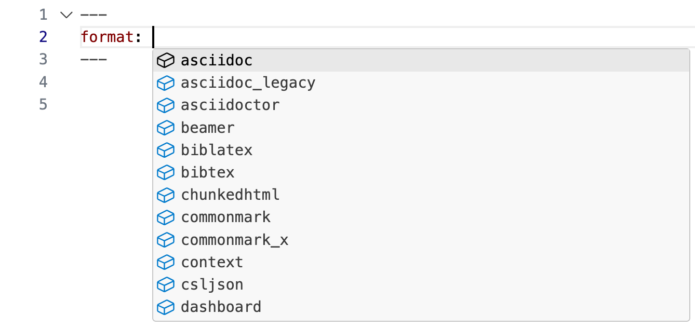

```{python}
#| label: penguins
import pandas as pd
from palmerpenguins import load_penguins
penguins = load_penguins()
penguins["species"].unique()
```array(['Adelie', 'Gentoo', 'Chinstrap'], dtype=object)Unlocking Dynamic Reproducible Documents
A Quarto Tutorial for Scientific Communication
Metadata: YAML
Text: Markdown
Code: Executed via knitr or jupyter
. . .
Weave it all together, and you have beautiful, powerful, and useful outputs!
Literate programming is writing out the program logic in a human language with included (separated by a primitive markup) code snippets and macros.
---
title: plotnine demo
date: 7/8/2024
format: html
---
There is a relationship between flipper length and body mass.
```{python}
#| label: fig-penguins
import plotnine as p9
from palmerpenguins import load_penguins
penguins = load_penguins()
(
p9.ggplot(
penguins,
p9.aes(x = "flipper_length_mm", y = "body_mass_g")
)
+ p9.geom_point()
+ p9.stat_smooth(method="lm")
+ p9.labs(
x = "Flipper length (mm)",
y = "Body mass (g)",
title = "Body mass vs. flipper length of Palmer Penguins"
)
)
```“Yet Another Markup Language” or “YAML Ain’t Markup Language” is used to provide document level metadata.
---
key: value
------
format: something
---. . .
---
format: html
------
format: pdf
------
format: revealjs
---Indentation matters!
---
format:
html:
toc: true
code-fold: true
---:---
format:html
------
format:
html
------
format:
html:
---There are multiple ways of formatting valid YAML:
:format: html:format:
htmlformat: html with selections made with proper indentationformat:
html:
toc: trueTo avoid manually typing out all the options, every time when rendering via the CLI:
. . .
quarto render document.qmd --to html. . .
quarto render document.qmd --to html -M code-fold:true. . .
quarto render document.qmd --to html -M code-fold:true -P alpha:0.2 -P ratio:0.3Lint, or a linter, is a static code analysis tool used to flag programming errors, bugs, stylistic errors and suspicious constructs.


VS Code provides rich tab-completion - start a word and tab to complete, or Ctrl + space to see all available options.

hello-penguins.qmd in RStudio.Ctrl + space to see the available YAML options.03:00
Many YAML fields are common across various outputs
But also each output type has its own set of valid YAML fields and options
Definitive list: quarto.org/docs/reference/formats/html
| Markdown syntax: | Output: |
|---|---|
|
italics and bold |
|
superscript2 / subscript2 |
|
|
|
verbatim code |
| Markdown syntax: | Output: |
|---|---|
|
Header 1 |
|
Header 2 |
|
Header 3 |
|
Header 4 |
|
Header 5 |
|
Header 6 |
There are several types of “links” or hyperlinks.
Markdown syntax:
You can embed [named hyperlinks](https://quarto.org/),
direct urls like <https://quarto.org/>, and links to
[other places](#quarto-anatomy) in
the document.
The syntax is similar for embedding an
inline image:
.Output:
You can embed named hyperlinks, direct urls like https://quarto.org/, and links to other places in the document.
The syntax is similar for embedding an inline image:
.
Unordered list:
Markdown syntax:
- unordered list
- sub-item 1
- sub-item 1
- sub-sub-item 1Output:
Ordered list:
Markdown syntax:
1. ordered list
2. item 2
i. sub-item 1
A. sub-sub-item 1Output:
Markdown syntax:
> Let us change our traditional attitude to the construction of programs: Instead of imagining that our main task is to instruct a computer what to do, let us concentrate rather on explaining to human beings what we want a computer to do.
>
> Donald Knuth, Literate ProgrammingOutput:
Let us change our traditional attitude to the construction of programs: Instead of imagining that our main task is to instruct a computer what to do, let us concentrate rather on explaining to human beings what we want a computer to do.
Donald Knuth, Literate Programming
“Literate Programming”, The Computer Journal 27 (1984), p. 97. (Reprinted in Literate Programming, 1992, p. 99.) Literate Programming (1984)
Pandoc, and therefore Quarto, can parse fenced div blocks:
You can think of a ::: div as a HTML <div> but it can also apply in specific situations to content in PDF or other formats:
Markdown syntax:
::: {style="border-left:10px solid red;padding-left:5px"}
This content is styled with a thick red border and some padding next to it.
:::Output:
This content is styled with a thick red border and some padding next to it.
These can often apply between formats:
::: {.unnumbered .unlisted}
Text
:::[text]{.class} spans can be thought of a <span .class>Text</span>, but again are a bit more transferable if using Pandoc/Quarto native attributes.
Markdown syntax:
This is text is colored [red]{style="color:red;"}.Output:
This is text is colored red.
markdown-syntax.qmd in VS Code.05:00
Markdown syntax:
This is text is colored [red]{style="color:red;"}.Output:
This is text is colored red.
Callouts provide a simple way to attract attention, for example, to this warning.
Danger, callouts will really improve your writing.
Here is something under construction.
Tip with caption.
callout-boxes.qmd and render the document.03:00
Pandoc supports numbering and formatting footnotes.
In Quarto, the footnote is placed at the bottom of the slide in presentations, whereas in a document it’s hoverable or at the end of the document.
Markdown syntax:
Here is an inline note.^[Inlines notes are easier to write,
since you don't have to pick an identifier and move down to
type the note.]Output:
Here is an inline note.1
Markdown syntax:
Here is an footnore reference[^1]
[^1]: This can be easy in some situations when you have a really long note or
don't want to inline complex outputs.Output:
Here is an footnore reference2
```{python}
#| label: penguins
import pandas as pd
from palmerpenguins import load_penguins
penguins = load_penguins()
penguins["species"].unique()
```array(['Adelie', 'Gentoo', 'Chinstrap'], dtype=object)python) is indicated between curly braces {python}#| (hashpipe): #| option1: valueIf you simply want code formatting but don’t want to execute the code:
```python```python
penguins.head()
```. . .
eval: false as chunk option```{python}
#| eval: false
penguins.head()
```echoThe echo option shows the code when set to true and hides it when set to false.
If you want to both execute the code and return the full code including backticks (like in a teaching scenario) echo: fenced is your friend!
```{python}
1 + 1
```2In reproducible reports and manuscripts, the most commonly included code outputs are tables and figures.
So they get their own special sections in our deep dive!
Markdown syntax:
| Right | Left | Default | Center |
|------:|:-----|---------|:------:|
| 12 | 12 | 12 | 12 |
| 123 | 123 | 123 | 123 |
| 1 | 1 | 1 | 1 |. . .
Output:
| Right | Left | Default | Center |
|---|---|---|---|
| 12 | 12 | 12 | 12 |
| 123 | 123 | 123 | 123 |
| 1 | 1 | 1 | 1 |
Markdown syntax:
+---------------+---------------+--------------------+
| Fruit | Price | Advantages |
+===============+===============+====================+
| Bananas | $1.34 | - built-in wrapper |
| | | - bright color |
+---------------+---------------+--------------------+
| Oranges | $2.10 | - cures scurvy |
| | | - tasty |
+---------------+---------------+--------------------+
: Sample grid table.Output:
| Fruit | Price | Advantages |
|---|---|---|
| Bananas | $1.34 |
|
| Oranges | $2.10 |
|
+---------------+---------------+--------------------+
| Right | Left | Centered |
+==============:+:==============+:==================:+
| Bananas | $1.34 | built-in wrapper |
+---------------+---------------+--------------------+. . .
+--------------:+:--------------+:------------------:+
| Right | Left | Centered |
+---------------+---------------+--------------------+If you are using pandas to work with your data, you can convert a pandas DataFrame to an HTML table using the DataFrame.to_html() method:
penguins.to_html(index=False)| species | island | bill_length_mm | bill_depth_mm | flipper_length_mm | body_mass_g | sex | year |
|---|---|---|---|---|---|---|---|
| Adelie | Torgersen | 39.1 | 18.7 | 181.0 | 3750.0 | male | 2007 |
| Adelie | Torgersen | 39.5 | 17.4 | 186.0 | 3800.0 | female | 2007 |
| Adelie | Torgersen | 40.3 | 18.0 | 195.0 | 3250.0 | female | 2007 |
| Adelie | Torgersen | NaN | NaN | NaN | NaN | NaN | 2007 |
| Adelie | Torgersen | 36.7 | 19.3 | 193.0 | 3450.0 | female | 2007 |
| Adelie | Torgersen | 39.3 | 20.6 | 190.0 | 3650.0 | male | 2007 |
| Adelie | Torgersen | 38.9 | 17.8 | 181.0 | 3625.0 | female | 2007 |
| Adelie | Torgersen | 39.2 | 19.6 | 195.0 | 4675.0 | male | 2007 |
| Adelie | Torgersen | 34.1 | 18.1 | 193.0 | 3475.0 | NaN | 2007 |
| Adelie | Torgersen | 42.0 | 20.2 | 190.0 | 4250.0 | NaN | 2007 |
| Adelie | Torgersen | 37.8 | 17.1 | 186.0 | 3300.0 | NaN | 2007 |
| Adelie | Torgersen | 37.8 | 17.3 | 180.0 | 3700.0 | NaN | 2007 |
| Adelie | Torgersen | 41.1 | 17.6 | 182.0 | 3200.0 | female | 2007 |
| Adelie | Torgersen | 38.6 | 21.2 | 191.0 | 3800.0 | male | 2007 |
| Adelie | Torgersen | 34.6 | 21.1 | 198.0 | 4400.0 | male | 2007 |
| Adelie | Torgersen | 36.6 | 17.8 | 185.0 | 3700.0 | female | 2007 |
| Adelie | Torgersen | 38.7 | 19.0 | 195.0 | 3450.0 | female | 2007 |
| Adelie | Torgersen | 42.5 | 20.7 | 197.0 | 4500.0 | male | 2007 |
| Adelie | Torgersen | 34.4 | 18.4 | 184.0 | 3325.0 | female | 2007 |
| Adelie | Torgersen | 46.0 | 21.5 | 194.0 | 4200.0 | male | 2007 |
| Adelie | Biscoe | 37.8 | 18.3 | 174.0 | 3400.0 | female | 2007 |
| Adelie | Biscoe | 37.7 | 18.7 | 180.0 | 3600.0 | male | 2007 |
| Adelie | Biscoe | 35.9 | 19.2 | 189.0 | 3800.0 | female | 2007 |
| Adelie | Biscoe | 38.2 | 18.1 | 185.0 | 3950.0 | male | 2007 |
| Adelie | Biscoe | 38.8 | 17.2 | 180.0 | 3800.0 | male | 2007 |
| Adelie | Biscoe | 35.3 | 18.9 | 187.0 | 3800.0 | female | 2007 |
| Adelie | Biscoe | 40.6 | 18.6 | 183.0 | 3550.0 | male | 2007 |
| Adelie | Biscoe | 40.5 | 17.9 | 187.0 | 3200.0 | female | 2007 |
| Adelie | Biscoe | 37.9 | 18.6 | 172.0 | 3150.0 | female | 2007 |
| Adelie | Biscoe | 40.5 | 18.9 | 180.0 | 3950.0 | male | 2007 |
| Adelie | Dream | 39.5 | 16.7 | 178.0 | 3250.0 | female | 2007 |
| Adelie | Dream | 37.2 | 18.1 | 178.0 | 3900.0 | male | 2007 |
| Adelie | Dream | 39.5 | 17.8 | 188.0 | 3300.0 | female | 2007 |
| Adelie | Dream | 40.9 | 18.9 | 184.0 | 3900.0 | male | 2007 |
| Adelie | Dream | 36.4 | 17.0 | 195.0 | 3325.0 | female | 2007 |
| Adelie | Dream | 39.2 | 21.1 | 196.0 | 4150.0 | male | 2007 |
| Adelie | Dream | 38.8 | 20.0 | 190.0 | 3950.0 | male | 2007 |
| Adelie | Dream | 42.2 | 18.5 | 180.0 | 3550.0 | female | 2007 |
| Adelie | Dream | 37.6 | 19.3 | 181.0 | 3300.0 | female | 2007 |
| Adelie | Dream | 39.8 | 19.1 | 184.0 | 4650.0 | male | 2007 |
| Adelie | Dream | 36.5 | 18.0 | 182.0 | 3150.0 | female | 2007 |
| Adelie | Dream | 40.8 | 18.4 | 195.0 | 3900.0 | male | 2007 |
| Adelie | Dream | 36.0 | 18.5 | 186.0 | 3100.0 | female | 2007 |
| Adelie | Dream | 44.1 | 19.7 | 196.0 | 4400.0 | male | 2007 |
| Adelie | Dream | 37.0 | 16.9 | 185.0 | 3000.0 | female | 2007 |
| Adelie | Dream | 39.6 | 18.8 | 190.0 | 4600.0 | male | 2007 |
| Adelie | Dream | 41.1 | 19.0 | 182.0 | 3425.0 | male | 2007 |
| Adelie | Dream | 37.5 | 18.9 | 179.0 | 2975.0 | NaN | 2007 |
| Adelie | Dream | 36.0 | 17.9 | 190.0 | 3450.0 | female | 2007 |
| Adelie | Dream | 42.3 | 21.2 | 191.0 | 4150.0 | male | 2007 |
| Adelie | Biscoe | 39.6 | 17.7 | 186.0 | 3500.0 | female | 2008 |
| Adelie | Biscoe | 40.1 | 18.9 | 188.0 | 4300.0 | male | 2008 |
| Adelie | Biscoe | 35.0 | 17.9 | 190.0 | 3450.0 | female | 2008 |
| Adelie | Biscoe | 42.0 | 19.5 | 200.0 | 4050.0 | male | 2008 |
| Adelie | Biscoe | 34.5 | 18.1 | 187.0 | 2900.0 | female | 2008 |
| Adelie | Biscoe | 41.4 | 18.6 | 191.0 | 3700.0 | male | 2008 |
| Adelie | Biscoe | 39.0 | 17.5 | 186.0 | 3550.0 | female | 2008 |
| Adelie | Biscoe | 40.6 | 18.8 | 193.0 | 3800.0 | male | 2008 |
| Adelie | Biscoe | 36.5 | 16.6 | 181.0 | 2850.0 | female | 2008 |
| Adelie | Biscoe | 37.6 | 19.1 | 194.0 | 3750.0 | male | 2008 |
| Adelie | Biscoe | 35.7 | 16.9 | 185.0 | 3150.0 | female | 2008 |
| Adelie | Biscoe | 41.3 | 21.1 | 195.0 | 4400.0 | male | 2008 |
| Adelie | Biscoe | 37.6 | 17.0 | 185.0 | 3600.0 | female | 2008 |
| Adelie | Biscoe | 41.1 | 18.2 | 192.0 | 4050.0 | male | 2008 |
| Adelie | Biscoe | 36.4 | 17.1 | 184.0 | 2850.0 | female | 2008 |
| Adelie | Biscoe | 41.6 | 18.0 | 192.0 | 3950.0 | male | 2008 |
| Adelie | Biscoe | 35.5 | 16.2 | 195.0 | 3350.0 | female | 2008 |
| Adelie | Biscoe | 41.1 | 19.1 | 188.0 | 4100.0 | male | 2008 |
| Adelie | Torgersen | 35.9 | 16.6 | 190.0 | 3050.0 | female | 2008 |
| Adelie | Torgersen | 41.8 | 19.4 | 198.0 | 4450.0 | male | 2008 |
| Adelie | Torgersen | 33.5 | 19.0 | 190.0 | 3600.0 | female | 2008 |
| Adelie | Torgersen | 39.7 | 18.4 | 190.0 | 3900.0 | male | 2008 |
| Adelie | Torgersen | 39.6 | 17.2 | 196.0 | 3550.0 | female | 2008 |
| Adelie | Torgersen | 45.8 | 18.9 | 197.0 | 4150.0 | male | 2008 |
| Adelie | Torgersen | 35.5 | 17.5 | 190.0 | 3700.0 | female | 2008 |
| Adelie | Torgersen | 42.8 | 18.5 | 195.0 | 4250.0 | male | 2008 |
| Adelie | Torgersen | 40.9 | 16.8 | 191.0 | 3700.0 | female | 2008 |
| Adelie | Torgersen | 37.2 | 19.4 | 184.0 | 3900.0 | male | 2008 |
| Adelie | Torgersen | 36.2 | 16.1 | 187.0 | 3550.0 | female | 2008 |
| Adelie | Torgersen | 42.1 | 19.1 | 195.0 | 4000.0 | male | 2008 |
| Adelie | Torgersen | 34.6 | 17.2 | 189.0 | 3200.0 | female | 2008 |
| Adelie | Torgersen | 42.9 | 17.6 | 196.0 | 4700.0 | male | 2008 |
| Adelie | Torgersen | 36.7 | 18.8 | 187.0 | 3800.0 | female | 2008 |
| Adelie | Torgersen | 35.1 | 19.4 | 193.0 | 4200.0 | male | 2008 |
| Adelie | Dream | 37.3 | 17.8 | 191.0 | 3350.0 | female | 2008 |
| Adelie | Dream | 41.3 | 20.3 | 194.0 | 3550.0 | male | 2008 |
| Adelie | Dream | 36.3 | 19.5 | 190.0 | 3800.0 | male | 2008 |
| Adelie | Dream | 36.9 | 18.6 | 189.0 | 3500.0 | female | 2008 |
| Adelie | Dream | 38.3 | 19.2 | 189.0 | 3950.0 | male | 2008 |
| Adelie | Dream | 38.9 | 18.8 | 190.0 | 3600.0 | female | 2008 |
| Adelie | Dream | 35.7 | 18.0 | 202.0 | 3550.0 | female | 2008 |
| Adelie | Dream | 41.1 | 18.1 | 205.0 | 4300.0 | male | 2008 |
| Adelie | Dream | 34.0 | 17.1 | 185.0 | 3400.0 | female | 2008 |
| Adelie | Dream | 39.6 | 18.1 | 186.0 | 4450.0 | male | 2008 |
| Adelie | Dream | 36.2 | 17.3 | 187.0 | 3300.0 | female | 2008 |
| Adelie | Dream | 40.8 | 18.9 | 208.0 | 4300.0 | male | 2008 |
| Adelie | Dream | 38.1 | 18.6 | 190.0 | 3700.0 | female | 2008 |
| Adelie | Dream | 40.3 | 18.5 | 196.0 | 4350.0 | male | 2008 |
| Adelie | Dream | 33.1 | 16.1 | 178.0 | 2900.0 | female | 2008 |
| Adelie | Dream | 43.2 | 18.5 | 192.0 | 4100.0 | male | 2008 |
| Adelie | Biscoe | 35.0 | 17.9 | 192.0 | 3725.0 | female | 2009 |
| Adelie | Biscoe | 41.0 | 20.0 | 203.0 | 4725.0 | male | 2009 |
| Adelie | Biscoe | 37.7 | 16.0 | 183.0 | 3075.0 | female | 2009 |
| Adelie | Biscoe | 37.8 | 20.0 | 190.0 | 4250.0 | male | 2009 |
| Adelie | Biscoe | 37.9 | 18.6 | 193.0 | 2925.0 | female | 2009 |
| Adelie | Biscoe | 39.7 | 18.9 | 184.0 | 3550.0 | male | 2009 |
| Adelie | Biscoe | 38.6 | 17.2 | 199.0 | 3750.0 | female | 2009 |
| Adelie | Biscoe | 38.2 | 20.0 | 190.0 | 3900.0 | male | 2009 |
| Adelie | Biscoe | 38.1 | 17.0 | 181.0 | 3175.0 | female | 2009 |
| Adelie | Biscoe | 43.2 | 19.0 | 197.0 | 4775.0 | male | 2009 |
| Adelie | Biscoe | 38.1 | 16.5 | 198.0 | 3825.0 | female | 2009 |
| Adelie | Biscoe | 45.6 | 20.3 | 191.0 | 4600.0 | male | 2009 |
| Adelie | Biscoe | 39.7 | 17.7 | 193.0 | 3200.0 | female | 2009 |
| Adelie | Biscoe | 42.2 | 19.5 | 197.0 | 4275.0 | male | 2009 |
| Adelie | Biscoe | 39.6 | 20.7 | 191.0 | 3900.0 | female | 2009 |
| Adelie | Biscoe | 42.7 | 18.3 | 196.0 | 4075.0 | male | 2009 |
| Adelie | Torgersen | 38.6 | 17.0 | 188.0 | 2900.0 | female | 2009 |
| Adelie | Torgersen | 37.3 | 20.5 | 199.0 | 3775.0 | male | 2009 |
| Adelie | Torgersen | 35.7 | 17.0 | 189.0 | 3350.0 | female | 2009 |
| Adelie | Torgersen | 41.1 | 18.6 | 189.0 | 3325.0 | male | 2009 |
| Adelie | Torgersen | 36.2 | 17.2 | 187.0 | 3150.0 | female | 2009 |
| Adelie | Torgersen | 37.7 | 19.8 | 198.0 | 3500.0 | male | 2009 |
| Adelie | Torgersen | 40.2 | 17.0 | 176.0 | 3450.0 | female | 2009 |
| Adelie | Torgersen | 41.4 | 18.5 | 202.0 | 3875.0 | male | 2009 |
| Adelie | Torgersen | 35.2 | 15.9 | 186.0 | 3050.0 | female | 2009 |
| Adelie | Torgersen | 40.6 | 19.0 | 199.0 | 4000.0 | male | 2009 |
| Adelie | Torgersen | 38.8 | 17.6 | 191.0 | 3275.0 | female | 2009 |
| Adelie | Torgersen | 41.5 | 18.3 | 195.0 | 4300.0 | male | 2009 |
| Adelie | Torgersen | 39.0 | 17.1 | 191.0 | 3050.0 | female | 2009 |
| Adelie | Torgersen | 44.1 | 18.0 | 210.0 | 4000.0 | male | 2009 |
| Adelie | Torgersen | 38.5 | 17.9 | 190.0 | 3325.0 | female | 2009 |
| Adelie | Torgersen | 43.1 | 19.2 | 197.0 | 3500.0 | male | 2009 |
| Adelie | Dream | 36.8 | 18.5 | 193.0 | 3500.0 | female | 2009 |
| Adelie | Dream | 37.5 | 18.5 | 199.0 | 4475.0 | male | 2009 |
| Adelie | Dream | 38.1 | 17.6 | 187.0 | 3425.0 | female | 2009 |
| Adelie | Dream | 41.1 | 17.5 | 190.0 | 3900.0 | male | 2009 |
| Adelie | Dream | 35.6 | 17.5 | 191.0 | 3175.0 | female | 2009 |
| Adelie | Dream | 40.2 | 20.1 | 200.0 | 3975.0 | male | 2009 |
| Adelie | Dream | 37.0 | 16.5 | 185.0 | 3400.0 | female | 2009 |
| Adelie | Dream | 39.7 | 17.9 | 193.0 | 4250.0 | male | 2009 |
| Adelie | Dream | 40.2 | 17.1 | 193.0 | 3400.0 | female | 2009 |
| Adelie | Dream | 40.6 | 17.2 | 187.0 | 3475.0 | male | 2009 |
| Adelie | Dream | 32.1 | 15.5 | 188.0 | 3050.0 | female | 2009 |
| Adelie | Dream | 40.7 | 17.0 | 190.0 | 3725.0 | male | 2009 |
| Adelie | Dream | 37.3 | 16.8 | 192.0 | 3000.0 | female | 2009 |
| Adelie | Dream | 39.0 | 18.7 | 185.0 | 3650.0 | male | 2009 |
| Adelie | Dream | 39.2 | 18.6 | 190.0 | 4250.0 | male | 2009 |
| Adelie | Dream | 36.6 | 18.4 | 184.0 | 3475.0 | female | 2009 |
| Adelie | Dream | 36.0 | 17.8 | 195.0 | 3450.0 | female | 2009 |
| Adelie | Dream | 37.8 | 18.1 | 193.0 | 3750.0 | male | 2009 |
| Adelie | Dream | 36.0 | 17.1 | 187.0 | 3700.0 | female | 2009 |
| Adelie | Dream | 41.5 | 18.5 | 201.0 | 4000.0 | male | 2009 |
| Gentoo | Biscoe | 46.1 | 13.2 | 211.0 | 4500.0 | female | 2007 |
| Gentoo | Biscoe | 50.0 | 16.3 | 230.0 | 5700.0 | male | 2007 |
| Gentoo | Biscoe | 48.7 | 14.1 | 210.0 | 4450.0 | female | 2007 |
| Gentoo | Biscoe | 50.0 | 15.2 | 218.0 | 5700.0 | male | 2007 |
| Gentoo | Biscoe | 47.6 | 14.5 | 215.0 | 5400.0 | male | 2007 |
| Gentoo | Biscoe | 46.5 | 13.5 | 210.0 | 4550.0 | female | 2007 |
| Gentoo | Biscoe | 45.4 | 14.6 | 211.0 | 4800.0 | female | 2007 |
| Gentoo | Biscoe | 46.7 | 15.3 | 219.0 | 5200.0 | male | 2007 |
| Gentoo | Biscoe | 43.3 | 13.4 | 209.0 | 4400.0 | female | 2007 |
| Gentoo | Biscoe | 46.8 | 15.4 | 215.0 | 5150.0 | male | 2007 |
| Gentoo | Biscoe | 40.9 | 13.7 | 214.0 | 4650.0 | female | 2007 |
| Gentoo | Biscoe | 49.0 | 16.1 | 216.0 | 5550.0 | male | 2007 |
| Gentoo | Biscoe | 45.5 | 13.7 | 214.0 | 4650.0 | female | 2007 |
| Gentoo | Biscoe | 48.4 | 14.6 | 213.0 | 5850.0 | male | 2007 |
| Gentoo | Biscoe | 45.8 | 14.6 | 210.0 | 4200.0 | female | 2007 |
| Gentoo | Biscoe | 49.3 | 15.7 | 217.0 | 5850.0 | male | 2007 |
| Gentoo | Biscoe | 42.0 | 13.5 | 210.0 | 4150.0 | female | 2007 |
| Gentoo | Biscoe | 49.2 | 15.2 | 221.0 | 6300.0 | male | 2007 |
| Gentoo | Biscoe | 46.2 | 14.5 | 209.0 | 4800.0 | female | 2007 |
| Gentoo | Biscoe | 48.7 | 15.1 | 222.0 | 5350.0 | male | 2007 |
| Gentoo | Biscoe | 50.2 | 14.3 | 218.0 | 5700.0 | male | 2007 |
| Gentoo | Biscoe | 45.1 | 14.5 | 215.0 | 5000.0 | female | 2007 |
| Gentoo | Biscoe | 46.5 | 14.5 | 213.0 | 4400.0 | female | 2007 |
| Gentoo | Biscoe | 46.3 | 15.8 | 215.0 | 5050.0 | male | 2007 |
| Gentoo | Biscoe | 42.9 | 13.1 | 215.0 | 5000.0 | female | 2007 |
| Gentoo | Biscoe | 46.1 | 15.1 | 215.0 | 5100.0 | male | 2007 |
| Gentoo | Biscoe | 44.5 | 14.3 | 216.0 | 4100.0 | NaN | 2007 |
| Gentoo | Biscoe | 47.8 | 15.0 | 215.0 | 5650.0 | male | 2007 |
| Gentoo | Biscoe | 48.2 | 14.3 | 210.0 | 4600.0 | female | 2007 |
| Gentoo | Biscoe | 50.0 | 15.3 | 220.0 | 5550.0 | male | 2007 |
| Gentoo | Biscoe | 47.3 | 15.3 | 222.0 | 5250.0 | male | 2007 |
| Gentoo | Biscoe | 42.8 | 14.2 | 209.0 | 4700.0 | female | 2007 |
| Gentoo | Biscoe | 45.1 | 14.5 | 207.0 | 5050.0 | female | 2007 |
| Gentoo | Biscoe | 59.6 | 17.0 | 230.0 | 6050.0 | male | 2007 |
| Gentoo | Biscoe | 49.1 | 14.8 | 220.0 | 5150.0 | female | 2008 |
| Gentoo | Biscoe | 48.4 | 16.3 | 220.0 | 5400.0 | male | 2008 |
| Gentoo | Biscoe | 42.6 | 13.7 | 213.0 | 4950.0 | female | 2008 |
| Gentoo | Biscoe | 44.4 | 17.3 | 219.0 | 5250.0 | male | 2008 |
| Gentoo | Biscoe | 44.0 | 13.6 | 208.0 | 4350.0 | female | 2008 |
| Gentoo | Biscoe | 48.7 | 15.7 | 208.0 | 5350.0 | male | 2008 |
| Gentoo | Biscoe | 42.7 | 13.7 | 208.0 | 3950.0 | female | 2008 |
| Gentoo | Biscoe | 49.6 | 16.0 | 225.0 | 5700.0 | male | 2008 |
| Gentoo | Biscoe | 45.3 | 13.7 | 210.0 | 4300.0 | female | 2008 |
| Gentoo | Biscoe | 49.6 | 15.0 | 216.0 | 4750.0 | male | 2008 |
| Gentoo | Biscoe | 50.5 | 15.9 | 222.0 | 5550.0 | male | 2008 |
| Gentoo | Biscoe | 43.6 | 13.9 | 217.0 | 4900.0 | female | 2008 |
| Gentoo | Biscoe | 45.5 | 13.9 | 210.0 | 4200.0 | female | 2008 |
| Gentoo | Biscoe | 50.5 | 15.9 | 225.0 | 5400.0 | male | 2008 |
| Gentoo | Biscoe | 44.9 | 13.3 | 213.0 | 5100.0 | female | 2008 |
| Gentoo | Biscoe | 45.2 | 15.8 | 215.0 | 5300.0 | male | 2008 |
| Gentoo | Biscoe | 46.6 | 14.2 | 210.0 | 4850.0 | female | 2008 |
| Gentoo | Biscoe | 48.5 | 14.1 | 220.0 | 5300.0 | male | 2008 |
| Gentoo | Biscoe | 45.1 | 14.4 | 210.0 | 4400.0 | female | 2008 |
| Gentoo | Biscoe | 50.1 | 15.0 | 225.0 | 5000.0 | male | 2008 |
| Gentoo | Biscoe | 46.5 | 14.4 | 217.0 | 4900.0 | female | 2008 |
| Gentoo | Biscoe | 45.0 | 15.4 | 220.0 | 5050.0 | male | 2008 |
| Gentoo | Biscoe | 43.8 | 13.9 | 208.0 | 4300.0 | female | 2008 |
| Gentoo | Biscoe | 45.5 | 15.0 | 220.0 | 5000.0 | male | 2008 |
| Gentoo | Biscoe | 43.2 | 14.5 | 208.0 | 4450.0 | female | 2008 |
| Gentoo | Biscoe | 50.4 | 15.3 | 224.0 | 5550.0 | male | 2008 |
| Gentoo | Biscoe | 45.3 | 13.8 | 208.0 | 4200.0 | female | 2008 |
| Gentoo | Biscoe | 46.2 | 14.9 | 221.0 | 5300.0 | male | 2008 |
| Gentoo | Biscoe | 45.7 | 13.9 | 214.0 | 4400.0 | female | 2008 |
| Gentoo | Biscoe | 54.3 | 15.7 | 231.0 | 5650.0 | male | 2008 |
| Gentoo | Biscoe | 45.8 | 14.2 | 219.0 | 4700.0 | female | 2008 |
| Gentoo | Biscoe | 49.8 | 16.8 | 230.0 | 5700.0 | male | 2008 |
| Gentoo | Biscoe | 46.2 | 14.4 | 214.0 | 4650.0 | NaN | 2008 |
| Gentoo | Biscoe | 49.5 | 16.2 | 229.0 | 5800.0 | male | 2008 |
| Gentoo | Biscoe | 43.5 | 14.2 | 220.0 | 4700.0 | female | 2008 |
| Gentoo | Biscoe | 50.7 | 15.0 | 223.0 | 5550.0 | male | 2008 |
| Gentoo | Biscoe | 47.7 | 15.0 | 216.0 | 4750.0 | female | 2008 |
| Gentoo | Biscoe | 46.4 | 15.6 | 221.0 | 5000.0 | male | 2008 |
| Gentoo | Biscoe | 48.2 | 15.6 | 221.0 | 5100.0 | male | 2008 |
| Gentoo | Biscoe | 46.5 | 14.8 | 217.0 | 5200.0 | female | 2008 |
| Gentoo | Biscoe | 46.4 | 15.0 | 216.0 | 4700.0 | female | 2008 |
| Gentoo | Biscoe | 48.6 | 16.0 | 230.0 | 5800.0 | male | 2008 |
| Gentoo | Biscoe | 47.5 | 14.2 | 209.0 | 4600.0 | female | 2008 |
| Gentoo | Biscoe | 51.1 | 16.3 | 220.0 | 6000.0 | male | 2008 |
| Gentoo | Biscoe | 45.2 | 13.8 | 215.0 | 4750.0 | female | 2008 |
| Gentoo | Biscoe | 45.2 | 16.4 | 223.0 | 5950.0 | male | 2008 |
| Gentoo | Biscoe | 49.1 | 14.5 | 212.0 | 4625.0 | female | 2009 |
| Gentoo | Biscoe | 52.5 | 15.6 | 221.0 | 5450.0 | male | 2009 |
| Gentoo | Biscoe | 47.4 | 14.6 | 212.0 | 4725.0 | female | 2009 |
| Gentoo | Biscoe | 50.0 | 15.9 | 224.0 | 5350.0 | male | 2009 |
| Gentoo | Biscoe | 44.9 | 13.8 | 212.0 | 4750.0 | female | 2009 |
| Gentoo | Biscoe | 50.8 | 17.3 | 228.0 | 5600.0 | male | 2009 |
| Gentoo | Biscoe | 43.4 | 14.4 | 218.0 | 4600.0 | female | 2009 |
| Gentoo | Biscoe | 51.3 | 14.2 | 218.0 | 5300.0 | male | 2009 |
| Gentoo | Biscoe | 47.5 | 14.0 | 212.0 | 4875.0 | female | 2009 |
| Gentoo | Biscoe | 52.1 | 17.0 | 230.0 | 5550.0 | male | 2009 |
| Gentoo | Biscoe | 47.5 | 15.0 | 218.0 | 4950.0 | female | 2009 |
| Gentoo | Biscoe | 52.2 | 17.1 | 228.0 | 5400.0 | male | 2009 |
| Gentoo | Biscoe | 45.5 | 14.5 | 212.0 | 4750.0 | female | 2009 |
| Gentoo | Biscoe | 49.5 | 16.1 | 224.0 | 5650.0 | male | 2009 |
| Gentoo | Biscoe | 44.5 | 14.7 | 214.0 | 4850.0 | female | 2009 |
| Gentoo | Biscoe | 50.8 | 15.7 | 226.0 | 5200.0 | male | 2009 |
| Gentoo | Biscoe | 49.4 | 15.8 | 216.0 | 4925.0 | male | 2009 |
| Gentoo | Biscoe | 46.9 | 14.6 | 222.0 | 4875.0 | female | 2009 |
| Gentoo | Biscoe | 48.4 | 14.4 | 203.0 | 4625.0 | female | 2009 |
| Gentoo | Biscoe | 51.1 | 16.5 | 225.0 | 5250.0 | male | 2009 |
| Gentoo | Biscoe | 48.5 | 15.0 | 219.0 | 4850.0 | female | 2009 |
| Gentoo | Biscoe | 55.9 | 17.0 | 228.0 | 5600.0 | male | 2009 |
| Gentoo | Biscoe | 47.2 | 15.5 | 215.0 | 4975.0 | female | 2009 |
| Gentoo | Biscoe | 49.1 | 15.0 | 228.0 | 5500.0 | male | 2009 |
| Gentoo | Biscoe | 47.3 | 13.8 | 216.0 | 4725.0 | NaN | 2009 |
| Gentoo | Biscoe | 46.8 | 16.1 | 215.0 | 5500.0 | male | 2009 |
| Gentoo | Biscoe | 41.7 | 14.7 | 210.0 | 4700.0 | female | 2009 |
| Gentoo | Biscoe | 53.4 | 15.8 | 219.0 | 5500.0 | male | 2009 |
| Gentoo | Biscoe | 43.3 | 14.0 | 208.0 | 4575.0 | female | 2009 |
| Gentoo | Biscoe | 48.1 | 15.1 | 209.0 | 5500.0 | male | 2009 |
| Gentoo | Biscoe | 50.5 | 15.2 | 216.0 | 5000.0 | female | 2009 |
| Gentoo | Biscoe | 49.8 | 15.9 | 229.0 | 5950.0 | male | 2009 |
| Gentoo | Biscoe | 43.5 | 15.2 | 213.0 | 4650.0 | female | 2009 |
| Gentoo | Biscoe | 51.5 | 16.3 | 230.0 | 5500.0 | male | 2009 |
| Gentoo | Biscoe | 46.2 | 14.1 | 217.0 | 4375.0 | female | 2009 |
| Gentoo | Biscoe | 55.1 | 16.0 | 230.0 | 5850.0 | male | 2009 |
| Gentoo | Biscoe | 44.5 | 15.7 | 217.0 | 4875.0 | NaN | 2009 |
| Gentoo | Biscoe | 48.8 | 16.2 | 222.0 | 6000.0 | male | 2009 |
| Gentoo | Biscoe | 47.2 | 13.7 | 214.0 | 4925.0 | female | 2009 |
| Gentoo | Biscoe | NaN | NaN | NaN | NaN | NaN | 2009 |
| Gentoo | Biscoe | 46.8 | 14.3 | 215.0 | 4850.0 | female | 2009 |
| Gentoo | Biscoe | 50.4 | 15.7 | 222.0 | 5750.0 | male | 2009 |
| Gentoo | Biscoe | 45.2 | 14.8 | 212.0 | 5200.0 | female | 2009 |
| Gentoo | Biscoe | 49.9 | 16.1 | 213.0 | 5400.0 | male | 2009 |
| Chinstrap | Dream | 46.5 | 17.9 | 192.0 | 3500.0 | female | 2007 |
| Chinstrap | Dream | 50.0 | 19.5 | 196.0 | 3900.0 | male | 2007 |
| Chinstrap | Dream | 51.3 | 19.2 | 193.0 | 3650.0 | male | 2007 |
| Chinstrap | Dream | 45.4 | 18.7 | 188.0 | 3525.0 | female | 2007 |
| Chinstrap | Dream | 52.7 | 19.8 | 197.0 | 3725.0 | male | 2007 |
| Chinstrap | Dream | 45.2 | 17.8 | 198.0 | 3950.0 | female | 2007 |
| Chinstrap | Dream | 46.1 | 18.2 | 178.0 | 3250.0 | female | 2007 |
| Chinstrap | Dream | 51.3 | 18.2 | 197.0 | 3750.0 | male | 2007 |
| Chinstrap | Dream | 46.0 | 18.9 | 195.0 | 4150.0 | female | 2007 |
| Chinstrap | Dream | 51.3 | 19.9 | 198.0 | 3700.0 | male | 2007 |
| Chinstrap | Dream | 46.6 | 17.8 | 193.0 | 3800.0 | female | 2007 |
| Chinstrap | Dream | 51.7 | 20.3 | 194.0 | 3775.0 | male | 2007 |
| Chinstrap | Dream | 47.0 | 17.3 | 185.0 | 3700.0 | female | 2007 |
| Chinstrap | Dream | 52.0 | 18.1 | 201.0 | 4050.0 | male | 2007 |
| Chinstrap | Dream | 45.9 | 17.1 | 190.0 | 3575.0 | female | 2007 |
| Chinstrap | Dream | 50.5 | 19.6 | 201.0 | 4050.0 | male | 2007 |
| Chinstrap | Dream | 50.3 | 20.0 | 197.0 | 3300.0 | male | 2007 |
| Chinstrap | Dream | 58.0 | 17.8 | 181.0 | 3700.0 | female | 2007 |
| Chinstrap | Dream | 46.4 | 18.6 | 190.0 | 3450.0 | female | 2007 |
| Chinstrap | Dream | 49.2 | 18.2 | 195.0 | 4400.0 | male | 2007 |
| Chinstrap | Dream | 42.4 | 17.3 | 181.0 | 3600.0 | female | 2007 |
| Chinstrap | Dream | 48.5 | 17.5 | 191.0 | 3400.0 | male | 2007 |
| Chinstrap | Dream | 43.2 | 16.6 | 187.0 | 2900.0 | female | 2007 |
| Chinstrap | Dream | 50.6 | 19.4 | 193.0 | 3800.0 | male | 2007 |
| Chinstrap | Dream | 46.7 | 17.9 | 195.0 | 3300.0 | female | 2007 |
| Chinstrap | Dream | 52.0 | 19.0 | 197.0 | 4150.0 | male | 2007 |
| Chinstrap | Dream | 50.5 | 18.4 | 200.0 | 3400.0 | female | 2008 |
| Chinstrap | Dream | 49.5 | 19.0 | 200.0 | 3800.0 | male | 2008 |
| Chinstrap | Dream | 46.4 | 17.8 | 191.0 | 3700.0 | female | 2008 |
| Chinstrap | Dream | 52.8 | 20.0 | 205.0 | 4550.0 | male | 2008 |
| Chinstrap | Dream | 40.9 | 16.6 | 187.0 | 3200.0 | female | 2008 |
| Chinstrap | Dream | 54.2 | 20.8 | 201.0 | 4300.0 | male | 2008 |
| Chinstrap | Dream | 42.5 | 16.7 | 187.0 | 3350.0 | female | 2008 |
| Chinstrap | Dream | 51.0 | 18.8 | 203.0 | 4100.0 | male | 2008 |
| Chinstrap | Dream | 49.7 | 18.6 | 195.0 | 3600.0 | male | 2008 |
| Chinstrap | Dream | 47.5 | 16.8 | 199.0 | 3900.0 | female | 2008 |
| Chinstrap | Dream | 47.6 | 18.3 | 195.0 | 3850.0 | female | 2008 |
| Chinstrap | Dream | 52.0 | 20.7 | 210.0 | 4800.0 | male | 2008 |
| Chinstrap | Dream | 46.9 | 16.6 | 192.0 | 2700.0 | female | 2008 |
| Chinstrap | Dream | 53.5 | 19.9 | 205.0 | 4500.0 | male | 2008 |
| Chinstrap | Dream | 49.0 | 19.5 | 210.0 | 3950.0 | male | 2008 |
| Chinstrap | Dream | 46.2 | 17.5 | 187.0 | 3650.0 | female | 2008 |
| Chinstrap | Dream | 50.9 | 19.1 | 196.0 | 3550.0 | male | 2008 |
| Chinstrap | Dream | 45.5 | 17.0 | 196.0 | 3500.0 | female | 2008 |
| Chinstrap | Dream | 50.9 | 17.9 | 196.0 | 3675.0 | female | 2009 |
| Chinstrap | Dream | 50.8 | 18.5 | 201.0 | 4450.0 | male | 2009 |
| Chinstrap | Dream | 50.1 | 17.9 | 190.0 | 3400.0 | female | 2009 |
| Chinstrap | Dream | 49.0 | 19.6 | 212.0 | 4300.0 | male | 2009 |
| Chinstrap | Dream | 51.5 | 18.7 | 187.0 | 3250.0 | male | 2009 |
| Chinstrap | Dream | 49.8 | 17.3 | 198.0 | 3675.0 | female | 2009 |
| Chinstrap | Dream | 48.1 | 16.4 | 199.0 | 3325.0 | female | 2009 |
| Chinstrap | Dream | 51.4 | 19.0 | 201.0 | 3950.0 | male | 2009 |
| Chinstrap | Dream | 45.7 | 17.3 | 193.0 | 3600.0 | female | 2009 |
| Chinstrap | Dream | 50.7 | 19.7 | 203.0 | 4050.0 | male | 2009 |
| Chinstrap | Dream | 42.5 | 17.3 | 187.0 | 3350.0 | female | 2009 |
| Chinstrap | Dream | 52.2 | 18.8 | 197.0 | 3450.0 | male | 2009 |
| Chinstrap | Dream | 45.2 | 16.6 | 191.0 | 3250.0 | female | 2009 |
| Chinstrap | Dream | 49.3 | 19.9 | 203.0 | 4050.0 | male | 2009 |
| Chinstrap | Dream | 50.2 | 18.8 | 202.0 | 3800.0 | male | 2009 |
| Chinstrap | Dream | 45.6 | 19.4 | 194.0 | 3525.0 | female | 2009 |
| Chinstrap | Dream | 51.9 | 19.5 | 206.0 | 3950.0 | male | 2009 |
| Chinstrap | Dream | 46.8 | 16.5 | 189.0 | 3650.0 | female | 2009 |
| Chinstrap | Dream | 45.7 | 17.0 | 195.0 | 3650.0 | female | 2009 |
| Chinstrap | Dream | 55.8 | 19.8 | 207.0 | 4000.0 | male | 2009 |
| Chinstrap | Dream | 43.5 | 18.1 | 202.0 | 3400.0 | female | 2009 |
| Chinstrap | Dream | 49.6 | 18.2 | 193.0 | 3775.0 | male | 2009 |
| Chinstrap | Dream | 50.8 | 19.0 | 210.0 | 4100.0 | male | 2009 |
| Chinstrap | Dream | 50.2 | 18.7 | 198.0 | 3775.0 | female | 2009 |
If you want fancier tables, try the great_tables package and all that it offers!
import great_tables as gt
(
gt.GT(penguins.head())
.tab_style(
style = [
gt.style.fill(color = "pink"),
gt.style.text(weight = "italic")
],
locations = gt.loc.body(
columns= "bill_length_mm",
rows = list(penguins[penguins["bill_length_mm"] > 40].index)
)
)
)| species | island | bill_length_mm | bill_depth_mm | flipper_length_mm | body_mass_g | sex | year |
| Adelie | Torgersen | 39.1 | 18.7 | 181.0 | 3750.0 | male | 2007 |
| Adelie | Torgersen | 39.5 | 17.4 | 186.0 | 3800.0 | female | 2007 |
| Adelie | Torgersen | 40.3 | 18.0 | 195.0 | 3250.0 | female | 2007 |
| Adelie | Torgersen | 2007 | |||||
| Adelie | Torgersen | 36.7 | 19.3 | 193.0 | 3450.0 | female | 2007 |
{fig-align="left"}{fig-align="right" fig-alt="Illustration of two penguins playing with a Quarto ball."}Markdown syntax:
::: {#fig-penguins layout-ncol=2}
{#fig-blue width="250px"}
{#fig-orange width="250px"}
Two penguins
:::Output:
Markdown syntax:
::: {#fig-penguin}
<iframe width="560" height="315" src="https://www.youtube.com/embed/q3uXXh1sHcI"></iframe>
Baby penguin tries to make friends
:::Output:
In places like markdown, YAML, or the command line/shell/terminal, you’ll need to use absolute or relative file paths:
. . .
"/Users/mine/quarto-asa-nebraska" - Whose computer will this work on?. . .
Relative = BETTER:
"../ = up one directory, ../../ = up two directories, etc./.. or / = start from root directory of your current computer```{python}
import plotnine as p9
(
p9.ggplot(penguins, p9.aes(x = "species", fill = "species"))
+ p9.geom_bar(show_legend = None)
)
```
Help readers to navigate your document with numbered references and hyperlinks to entities like figures and tables.
Cross referencing steps:
fig- or tbl-.@fig-... or @tbl-....The presence of the caption (Blue penguin) and label (#fig-blue-penguin) make this figure referenceable:
Markdown syntax:
See @fig-blue-penguin for a cute blue penguin.
{#fig-blue-penguin}The presence of the caption (A few penguins) and label (#tbl-penguins) make this table referenceable:
Markdown syntax:
See @tbl-penguins for data on a few penguins.
```{python}
#| label: tbl-penguins
#| tbl-cap: A few penguins
gt.GT(penguins.head())
```Output:
See Table 1 for data on a few penguins.
gt.GT(penguins.head())| species | island | bill_length_mm | bill_depth_mm | flipper_length_mm | body_mass_g | sex | year |
| Adelie | Torgersen | 39.1 | 18.7 | 181.0 | 3750.0 | male | 2007 |
| Adelie | Torgersen | 39.5 | 17.4 | 186.0 | 3800.0 | female | 2007 |
| Adelie | Torgersen | 40.3 | 18.0 | 195.0 | 3250.0 | female | 2007 |
| Adelie | Torgersen | 2007 | |||||
| Adelie | Torgersen | 36.7 | 19.3 | 193.0 | 3450.0 | female | 2007 |
tables-figures.qmd.10:00
Any questions / anything you’d like to review before we wrap up this module?